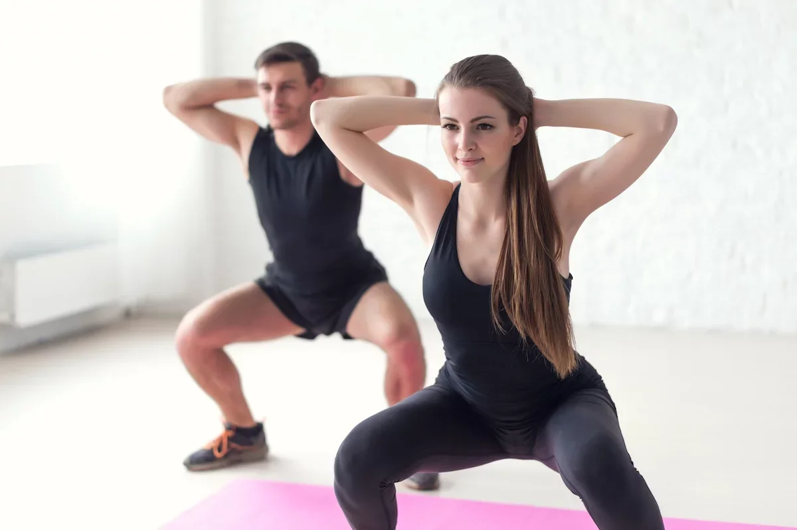

Para fazer corretamente o agachamento simples deve-se: Ficar em pé: abrir as pernas, afastar os pés à largura dos ombros e apoiá-los totalmente no chão; Dobrar os joelhos: os joelhos devem ser fletidos, jogando o quadril para baixo, até ultrapassar ligeiramente a linha do joelho e, empurrar o bumbum para trás, como se estivesse sentando em uma cadeira imaginária, mantendo as costas sempre eretas; Estender as pernas: deve-se esticar as pernas, que se encontram dobradas, para voltar à posição inicial, ficando em pé. Durante o exercícios, deve-se olhar sempre em frente e manter os braços estendidos à frente do corpo, balançando-os ao ritmo do agachamento, para manter o equilíbrio. Saiba mais em: Como fazer agachamentos corretamente.
Halteres são mais instáveis do que a barra e principalmente a máquina, gerando uma maior ativação dos músculos estabilizadores e do core. Desequilíbrios musculares podem ser diminuídos com o uso dos halteres.